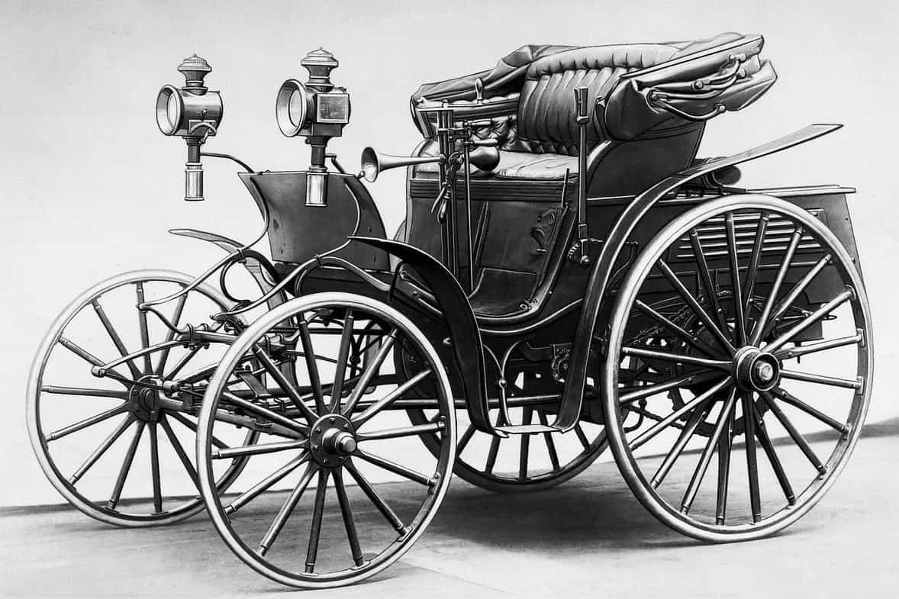

Минуле століття принесло людям безліч проблем, проте, і декілька дійсно геніальних винаходів з авторським правом. Ці винаходи активно використовуються по сьогодні і змінили наш світ на краще. Це сталося не відразу, але з часом, позитивні зміни відчули багато людей. Наше людство здатне використати будь-який предмет як собі на користь, так і в шкоду. Саме тому, багато із винаходів стали зброєю, способом пропаганди, за рахунок чого, досить небезпечні для використання. Команда Вайз Груп – це одна з кращих компаній у наданні послуг в сфері інтелектуальної власності. Ми не складаємо шаблонні реферати. Ми створимо для вас унікальний проект, який точно пройде по всім критеріям для отримання патенту. З часом, люди все-таки змогли позбавитися від негативного впливу таких предметів, і направити їх використання в сприятливе русло. Давайте розглянемо найпопулярніші винаходи 20-го століття.
Винаходи ХХ століття, які змінили світ
